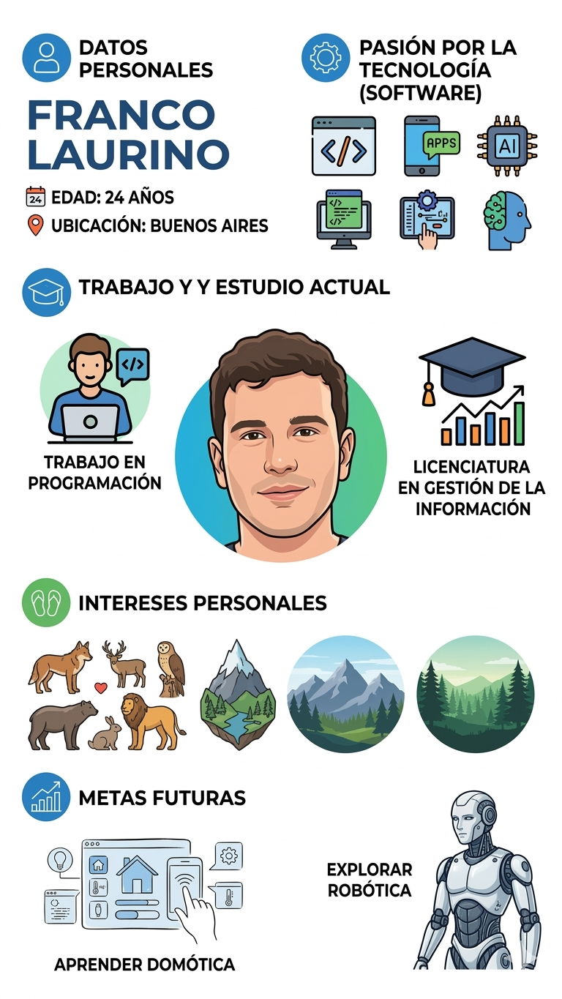

MIS
INTERESES
Explorando la intersección entre la tecnología, la naturaleza y el desarrollo humano.
-
Tecnología & Software
Trabajo activamente en programación, con pasión por el desarrollo de aplicaciones y la inteligencia artificial.
-
Estudio Actual
Actualmente cursando la Licenciatura en Gestión de la Información.
-
Naturaleza & Animales
Profundo interés personal por la fauna y la exploración de ecosistemas, montañas y bosques.
-
Metas Futuras
Proyectando mis conocimientos hacia la exploración de la robótica y el aprendizaje de sistemas de domótica.
